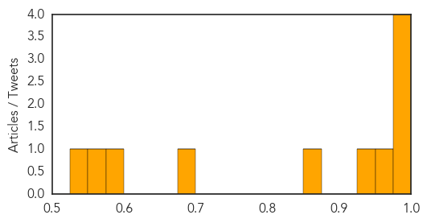
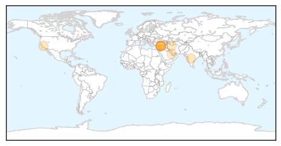
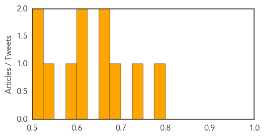

Meningitis
30-Day Web Trend
4 alerts, 1 warnings

30-Day Twitter Trend
1 alerts, 0 warnings

Article Locations

Article Confidences
Top Articles:
- 0.999
- 2 Cases of Viral Meningitis Reported at Wilton High School
- 0.996
- Another infectious disease gains momentum, dangerous for kids
- 0.995
- Health Officials Tell Seniors to Get Flu, Pneumococcal Vaccines
- 0.992
- Andrea Jaime, Georgetown Nursing Student, Dies After Tweeting 'I Think I'm Dying'
- 0.952
- Pharmacist Raises Concerns Over Enterovirus as Illness Spreads
- 0.936
- Georgetown offering preventive antibiotics to close friends of meningitis victim
- 0.857
- Student Tweeted 'this is what dying must feel like' before death
- 0.698
- Florida student attending Georgetown University dies from meningitis
- 0.594
- Florida student dies from meningitis
- 0.554
- Leeds mums lead meningitis campaign
- 0.544
- Florida student dies from meningitis
Top Tweets:
-
No tweets found for Sep 18, 2014
Measles
30-Day Web Trend
2 alerts, 0 warnings

30-Day Twitter Trend
0 alerts, 0 warnings

Article Locations
Article Confidences
Top Articles:
- 0.790
- Medical Relief Operation Stepped up in J&K - India
- 0.742
- 4 Southern California kids infected with enterovirus D68
- 0.696
- Farsnews
- 0.668
- 15 Syrian Children Die of UN Measles Vaccines
- 0.661
- Wrongly mixed vaccine suspected in deaths of 15 Syrian infants
- 0.614
- Union Government provides massive relief in flood affected J K Rescue
- 0.604
- 15 Children Die Because Medics 'Administered Anaesthetic instead of Measles Vaccination'
- 0.578
- Sabotage Suspected In Death Of Dozens Of Syrian Children From Measles Vaccine
- 0.542
- Mistake in Vaccination Campaign Kills 15 Syrian Children
- 0.521
- Measles vaccination campaign halted in northern Syria after up to 50 children die
- 0.504
- Human error to blame for vaccine mix-up that killed 15 children in Syria, says Western-backed opposition
Top Tweets:
-
No tweets found for Sep 18, 2014